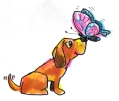
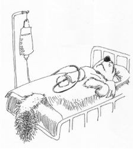

This page has usage examples for the following words:
cervical cancer (of the uterus) 子宮頚癌 しきゅうけいがん
gynecologist 婦人科医 ふじんかい
human papilloma virus ヒトパピローマウイルス
hysterectomy 子宮摘出 しきゅうてきしゅつ
obstretrics and gynecology （産）婦人科 （さん）ふじんか
Pap smear パップスメァー
uterus 子宮 しきゅう

Can I take regular check-ups at this clinic?
このクリニックで、定期検診を受けることができますか。
このクリニックで、ていきけんしんをうけることができますか。
I have heard that cytological screening is the newest method.
細胞診というのが、新しい方法だと聞きましたが・・
さいぼうしんというのが、あたらしいほうほうだとききましたが・・
I know everything came back negative, but I still want you to do the hysterectomy.
全て陰性に出たそうですが、やはり子宮摘出してください。
すべていんせいにでたそうですが、やはりしきゅうてきしゅつしてください。
I'm worried because my husband smokes.
主人が喫煙するので心配です。
しゅじんがきつえんするのでしんぱいです。
A conversation between a patient and a doctor about cervical cancer (of the uterus)
Patient:
It is said that gynecological diseases are often unnoticed by patients. Even though they feel “not quite right”, patients hesitate to participate in regular checkups.
婦人科の病気はなかなか本人も自覚しにくいらしいですね。身体の調子が「あれ、いつもと違う」といった程度の体調の変化では定期健診にも行きにくいですし. . .
Doctor:
Regular check up is implemented for such people as you mentioned. Participation in a regular check up (I. e., screening) is recommended. The incidence of cervical cancer decreased by more than 70% during these 50 years or so, largely as a result of screening. The screening is also known as Pap smear test. Early detection of cervical cancer is also helped by the establishment of risk factors of cervical cancer. Among known risk factors (human papilloma virus (HPV), having multiple sexual partners and smoking), HPV has been studied actively. Now, vaccination against infections by HPV is available and found to be highly effective for the prevention of cervical cancer.
定期健診はそのような人たちのためにもあるのですから、目的を理解して、ぜひ受けてください。子宮頸癌の発生率はこの50年余りで70％以上減少しましたが、これはひとえに定期健診すなわちスクリーニングのおかげといわれています。スクリーニングはパップスメアー（又は細胞診）の名で知られています。子宮頸癌の危険因子の確立もまた早期発見を助けています。危険因子（ヒトパピローマウイルス、複数のパートナーを持つ、喫煙）の中でも、特にヒトパピローマウイルスの研究が進み、このウイルス感染にたいするワクチンもでき頸癌予防に効果をあげています。

My two cents 一言おせっかい
Penny-wise and pound foolish
ほんのちょっとの異常を見逃して我慢をしたが為に、大事に至ることのないように、検診を受けることをおすすめします。
[shi04]
| © 1995-2013 NACOS International Institute. All Rights Reserved. |